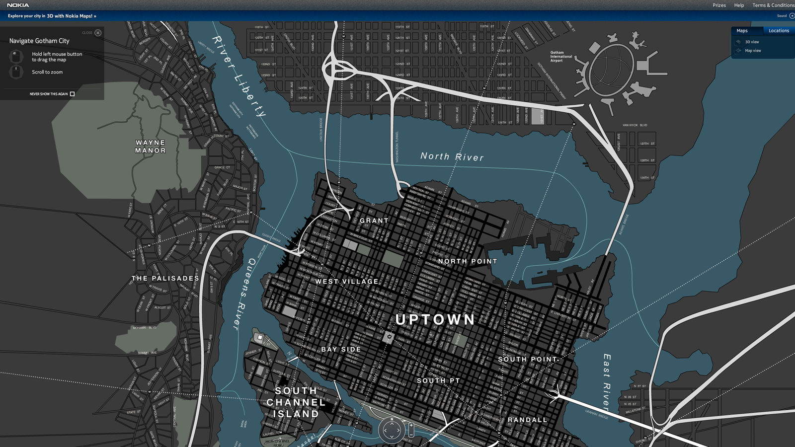

Nos sonhos da cidade Planilha e mapa da cidade
por Paulo Diovani GonçalvesVocê como jogador, estará interpretando uma parte do sonho da cidade. Uma parte bem consciente, sim, capaz de raciocinar, ter ideias, realizar façanhas e, principalmente, perceber que alguma coisa está errada, perceber que a cidade está doente.
Contudo, este personagem, esta parte do sonho que é o PJ, não é importante para a história…
O único personagem que importa, é a própria Cidade. O único que precisa ser salvo e o único que tem poder para isso.
A planilha (ficha) da cidade
Como todo bom personagem, a cidade possui uma planilha, uma ficha que a descreve, incluindo suas qualidade e defeitos, seus poderes, etc.
O modelo desta planilha está a seguir. Ela deve ser prenchida ainda na preparação do jogo, durante a Criação da cidade, sendo que a parte Áreas conhecidas é repetida para cada área que foi criada para a cidade.
| Nome da cidade: | 01 | dias sonhando | |||||||||||||||||
|---|---|---|---|---|---|---|---|---|---|---|---|---|---|---|---|---|---|---|---|
| Áreas conhecidas | |||||||||||||||||||
|
|||||||||||||||||||
| Escreva o sonho ao acordar… | |||||||||||||||||||
Vamos explicar melhor cada item da planilha:
Nome da cidade
Óbvio, né? O nome da cidade onde se passa a história. Pode ser o nome da cidade em que a história se baseia ou uma referência à ele. O importante é não esquecer que cidade é.
dias sonhando
A quandidade de dias que a cidade sonha. Geralmente será o número de sessões de jogo, para jogos mais longos.
Áreas conhecidas
As áreas da cidade que foram criadas pelo MJ e jogadores durante a Construção da cidade. Vamos aos detalhes delas a seguir.
Nome da área
O nome pelo qual a área é conhecida no jogo. Uma identificação simples, de uma ou duas palavras, que possa ser anotada num pedaço de papel e colocado sobre a carta da área.
Carta
A carta que foi usada para criar a área e determinar o Poder do pesadelo. Útil especialmente para manter jogos mais longos, quando você reconstruir o Mapa da cidade.
À direita de
Nome da área que fica à esquerda desta, se alguma. Também útil para reconstruir o mapa da cidade.
Abaixo de
Nome da área que fica acima desta, se alguma. Também útil para reconstruir o mapa da cidade.
Características
Características desta área. Estes são os detalhes que foram definidos para diferenciar o sonho da realidade, baseando-se no tipo de ambiente (o naipe) da área.
Pesadelo
O Pesadelo que atormenta esta área atualmente, se houver algum, com suas características e qualquer descrição que seja necessária.
Escreva o sonho ao acordar
Espaço destinado (você também pode usar um caderno) a um resumo dos acontecimentos da última sessão, afinal, sonhos são fáceis de esquecer após algum tempo.

Mapa da cidade
O mapa da cidade é uma grade de cartas do Baralho de construção que é montado durante a Construção da cidade.
Nele, as áreas ficam dispostas umas adjacecentes às outras, podendo fazer vizinhança com uma ou mais áreas.
Veja os exemplos à seguir, comparando com o preenchimendo das áreas na Planilha da cidade.
| Nome da área: | Escola abandonada | Carta: | K♣ |
|---|---|---|---|
| À direita de: | — | Abaixo de: | — |
| Nome da área: | Hospital macabro | Carta: | J♠ |
|---|---|---|---|
| À direita de: | Escola abandonada | Abaixo de: | — |
| Nome da área: | Há peixes no estacionamento! | Carta: | Q♥ |
|---|---|---|---|
| À direita de: | — | Abaixo de: | Hospital macabro |
 Escola abandonada
Escola abandonada
|
 Hospital macabro
Hospital macabro
|
 Há peixes no estacionamento!
Há peixes no estacionamento!
|
Em histórias mais longas, como Campanhas, o Mapa da cidade deve crescer bastante a medida que novas áreas são adicionadas.
Caminhando pela cidade
Embora o mapa da cidade indique a localização de uma área em realação as outras, não é obrigatório considerar este posicionamento durante a narrativa.
No nosso exemplo, para que os PJs fosse da Escola abandonada até a área identificada como Há peixes no estacionamento! deveriam passar primeiro pelo Hospital macabro…
Num caso como este, minha dica é: Considere as áreas que devem ser passadas, apenas se forem relevantes para a história. Se uma área que esteja no caminho de seu destino puder fornecer algo interessante para a história, então narre a passagem dos PJs também por esta área, mas se esta passagem for demorada e frustrante, apenas deixe para lá e chegue logo no destino.
Note que o Mapa da cidade não fornece também nenhuma informação acerca de tamanho das áreas e distâncias. Isto é intencional… Se o tamanho de uma área é importante, delalhe isto nas características da área. Quando às distâncias, considere distâncias relativas, como perto, longe ou muito longe, afinal, tudo não passa de um sonho.
créditos da imagem: Nokia Maps, Gizmodo
 Nos sonhos da cidade por Paulo Diovani Gonçalves está licenciado sob uma licença Creative Commons Atribuição – Compartilhamento pela mesma Licença (by-sa) 4.0 Internacional. Nos sonhos da cidade por Paulo Diovani Gonçalves está licenciado sob uma licença Creative Commons Atribuição – Compartilhamento pela mesma Licença (by-sa) 4.0 Internacional.
Nos sonhos da cidade por Paulo Diovani Gonçalves está licenciado sob uma licença Creative Commons Atribuição – Compartilhamento pela mesma Licença (by-sa) 4.0 Internacional. Nos sonhos da cidade por Paulo Diovani Gonçalves está licenciado sob uma licença Creative Commons Atribuição – Compartilhamento pela mesma Licença (by-sa) 4.0 Internacional.